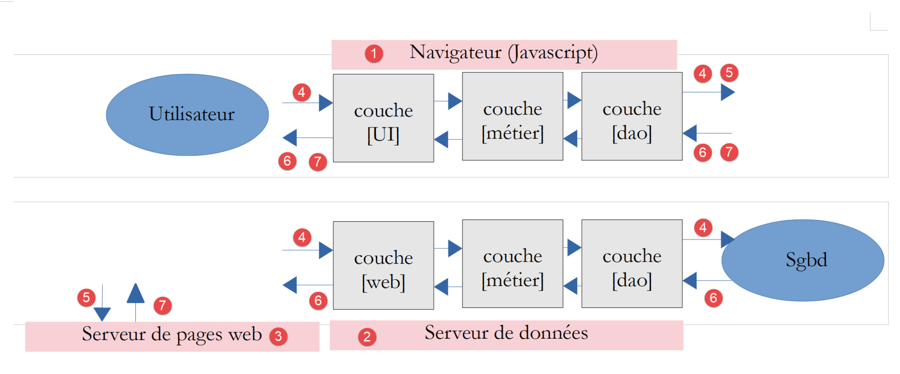

1. Introduction to the PHP 7 language
The PDF version of this document is available |HERE|.
The examples in this document are available |HERE|.
This document is part of a series of four articles:
- [Introduction to the PHP7 language through examples (2019)]. This is the current document;
- [Introduction to the ECMAScript 6 language through examples (2019)];
- [Introduction to the VUE.JS framework through examples (2019)];
- [Introduction to the NUXT.JS framework through examples (2019)];
These are all documents for beginners. The articles follow a logical sequence but are loosely connected:
- the document [1] introduces the language PHP 7. Readers interested only in the language PHP and not in the language Javascript of the following articles will stop here;
- the documents [2-4] aim to build a Javascript client for the tax calculation server developed in document [1];
- the frameworks Javascript, [vue.js], and [nuxt.js] in Articles 3 and 4 require knowledge of Javascript from the latest versions ofECMASCRIPT, and those of version 6. The [2] document is therefore intended for those who are not familiar with this version from Javascript. It refers to the tax calculation server built in document [1]. Readers of [2] will therefore sometimes need to refer to document [1];
- once ECMASCRIPT 6 has been mastered, we can move on to the VUE framework.JS, which allows you to build clients and Javascript that run in a browser in SPA mode (Single Page Application). This is the [3] document. It references both the tax calculation server built in the [1] document and the standalone client code Javascript built in [2]. Readers of [3] will therefore sometimes need to refer to documents [1] and [2];
- once VUE.JS has been mastered, we can move on to the NUXT framework.JS, which allows you to build clients and Javascript that run in a browser in SSR mode (Server Side Rendered). It refers both to the tax calculation server built into the [1] document, the standalone client code Javascript built in [2], and the application [vue.js] developed in the document [3]. Readers of [4] will therefore sometimes need to refer to documents [1], [2], and [3];
This document provides a list of PHP 7 console scripts in various areas (language structures, file access, database access, and internet access). Web programming is addressed through web services. In this document, a "web service" refers to any web application that produces plain text. These are data servers, not web page servers, which are a combination of HTML, CSS, and Javascript. It covers classic web concepts (HTTP protocol, jSON or XML responses, session management, authentication) also used in traditional web programming.
Nowadays, it is common to build web applications in client/server mode:

- in [1], the web browser displays web pages intended for a user [5, 7]. These pages contain Javascript implementing a client for a [2] data web service as well as a client for a [3] web page fragment server. A well-established framework in this field is Google’s Angular 2 (May 2019);
- In [2], the web server is a data server. It can be written in any language. It does not generate web pages in the traditional sense (HTML, CSS, Javascript) except perhaps the first time. However, this first page can be obtained from a traditional web server [3] (not a data server). The Javascript from the initial page will then generate the application’s various web pages by retrieving the [4] data to be displayed from the web server, which acts as a data server ([2]). It can also retrieve web page fragments [5] to format this data from the web page server [3];
- in [4], the user initiates an action;
- in [6,7]: they receive data wrapped in a web page fragment;
In this document, we will write client/server applications in PHP7 with the following structure:

This is a client/server application written in PHP. A [9] console script will query a [4] data server. The knowledge gained here for writing the data service can be reused in a web application. The data service in PHP can be retained, and the client PHP will be replaced by a client Javascript.
As the central theme of this document, we will build a tax calculation service in 13 versions. version 13 will have the following architecture:

The [web] server layer will have a MVC architecture (Model–View–Controller). The entire PHP 7 course is aimed at building this version.
The scripts in this document are commented, and their console output is reproduced. Additional explanations are sometimes provided. The document requires active reading: to understand a script, you must read its code, comments, and execution results.
The examples in this document are available |here|.
The PDF from the document can be found |here|.
Serge Tahé, July 2019